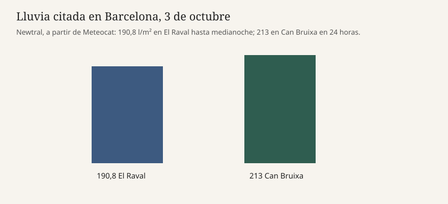

Barcelona · meteorología · 4 de octubre de 2026
Cataluña midió más de 200 litros en estaciones de Barcelona y el sistema no fue un medicán

Lo que las piezas permiten afirmar
Entre el sábado 3 y la madrugada del domingo 4 de octubre de 2026 Cataluña vivió un temporal de lluvia intensa que no llegó a ser un ciclón mediterráneo. Newtral, citando a Meteocat, da 190,8 litros por metro cuadrado en El Raval de Barcelona hasta la medianoche del sábado y 213 litros en la estación de Can Bruixa en 24 horas. El Govern restringió la movilidad y suspendió actividades en 20 comarcas después de que Meteocat situara el peligro en el nivel 6 de 6 y Protección Civil activara el plan INUNCAT en fase de emergencia. El Nacional recoge esas restricciones y las inundaciones como la segunda gran imagen de las portadas del domingo, junto a las marchas por la vivienda.
El presidente de la Generalitat, Salvador Illa, usó el sábado por la noche la expresión coloquial “minihuracán mediterráneo”. Newtral dice que no lo fue. Sobre Cataluña actuó un sistema convectivo de mesoescala, con un vórtice asociado. A última hora del sábado se especuló con una evolución hacia un medicán, el nombre habitual para un ciclón de rasgos tropicales en el Mediterráneo. Las observaciones de la madrugada, según la física Mar Gómez, directora de meteorología de eltiempo.es, citada por Newtral, no mostraban todas las características de un medicán.
Qué es frase de un cargo y qué es medida
“Minihuracán” es una metáfora de Illa, no una categoría de la Agencia Estatal de Meteorología ni de Meteocat. Sirve para explicar prisa. También puede inflar la expectativa. Newtral separa las dos cosas: hubo una vaguada poco profunda y un frente atlántico, una configuración que por sí sola no haría esperar tanta agua, y un mar cálido que alimentó la convección. La temperatura de la superficie marina frente a Barcelona en septiembre es el mecanismo que el reportaje cuantifica con Puertos del Estado y Aemet. Esa serie no está reproducida aquí como tabla oficial; está como cita de Newtral.
El nivel 6 de 6 y la fase de emergencia del INUNCAT son actos administrativos. Explican por qué se pararon trenes, se cancelaron vuelos y se cerraron actividades. No miden por sí solos los litros. Los litros son de estaciones concretas. El Raval y Can Bruixa no son toda el área metropolitana. Una portada que hable de “200 litros en Barcelona” está redondeando el dato de El Raval, no publicando un promedio de la ciudad.
Por qué el Mediterráneo cambia el umbral
Un sistema convectivo de mesoescala es un conjunto de tormentas que se regeneran y pasan una detrás de otra sobre la misma zona. Por eso un observatorio puede sumar más de 200 litros sin que exista un ojo de huracán ni un viento sostenido de ciclón tropical. El medicán, cuando se forma, necesita una estructura más organizada sobre el mar. Newtral dice que el sábado hubo indicios y que la madrugada no confirmó el salto de categoría. Esa distinción es el centro de la pieza: la alarma fue proporcional al agua posible; el nombre de huracán no se sostuvo.
La coincidencia con las marchas de vivienda es de calendario, no de causa. El mismo sábado hubo columnas en unas 50 ciudades y un temporal en el litoral catalán. El Nacional los pone en la misma portada porque compiten por la atención. No hay, en estas fuentes, un vínculo entre el decreto tumbado el viernes y la lluvia. Mezclarlos como un solo “clima político” es un recurso de quiosco.
La fase de emergencia, según el relato de las portadas, se prolongaba en principio hasta el mediodía del domingo. Lo que ocurrió después de ese plazo no está cerrado en los textos usados aquí. Una bajada del aviso no borra los 213 litros ya medidos.
Lo que esta pieza no es
No es un parte de víctimas. No es la ficha de un medicán nombrado. No es una predicción para la semana siguiente. La fotografía es el Ayuntamiento en la plaza de Sant Jaume en diciembre de 2022, con luces de Navidad: el edificio de una administración que restringió la movilidad, no una calle inundada el sábado.

Artículos fuente y puntuaciones
| Medio | Titular | T | N | C |
|---|---|---|---|---|
| Newtral | 200 litros en Barcelona y amago de ‘minihuracán’: la temperatura del Mediterráneo aviva un insólito temporal en un anticiclón | 94 | 0 | 96 |
| El Nacional | La calle clama y el cielo descarga: las portadas, bajo presión | 86 | -6 | 74 |
| Antena 3 | Noticias de hoy, sábado 3 de octubre de 2026 | 84 | -4 | 70 |
Newtral separa la frase de Illa de la clasificación meteorológica y cita estaciones, así que C se mantiene alto. El Nacional y Antena 3 repiten “minihuracán” como gancho de portada; la cifra de agua está, pero el nombre de huracán queda más cerca del hecho de lo que la propia pieza de Newtral permite.